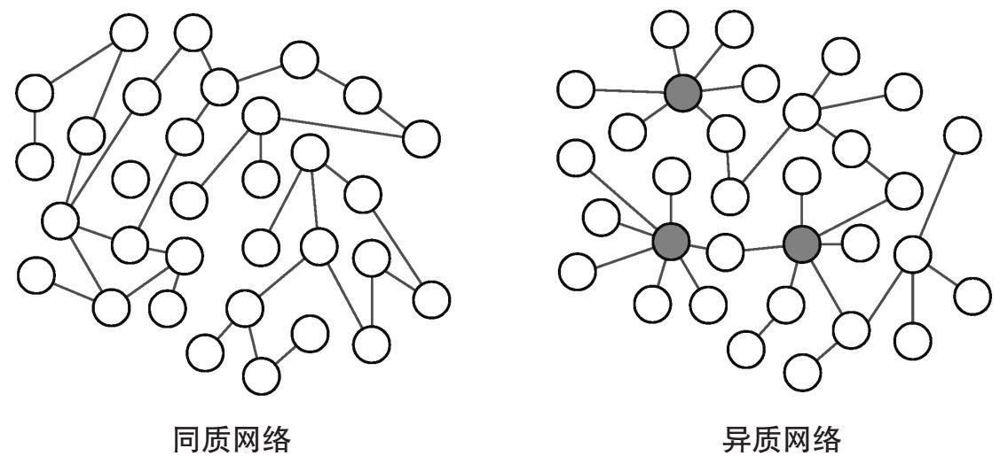
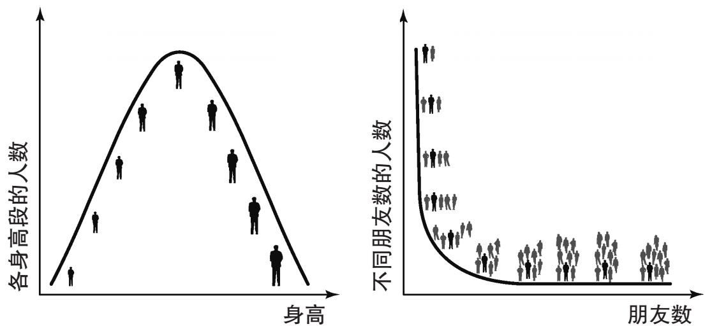

枢纽
在其令人印象深刻的“六度分隔理论”诸实验中，斯坦利·米尔格拉姆做了一项很久之后人们才能充分理解的观察。其中一个实验里，美国心理学家请一些随机挑选的内布拉斯加州公民转发一封信至马萨诸塞州的某股票经纪人。如果他们不认识收件人，就把信件寄送至那些他们认为与该经纪人更为接近的人。除了大部分信件平均仅用6步便抵达收件人处这一事实之外，米尔格拉姆还观察到，1/4的信件经由同一个源头传递至收件人，即该股票经纪人的服装商朋友，米尔格拉姆称之为雅各布先生。这一结果令人相当费解：为何如此之多指向该股票经纪人的关系路径都要经过这位先生？
经常坐飞机的人对类似现象都很熟悉。希思罗、法兰克福或纽约肯尼迪等机场对于环球旅行者而言都耳熟能详：无论目的地是何处，飞机都很可能会停靠这些机场。航空杂志常常附有世界地图，纵横交错的长线标出飞行路线：其中许多航线都会途经伦敦、法兰克福以及纽约等地，或将其作为终点。像这样的机场被称为枢纽 ，它们承载了整个航空交通的大部分运力。我们很容易得出，雅各布先生在社交网络中的位置与这些大型机场在空中交通中的地位相同。很可能，雅各布就是一个社交关系枢纽：他的许多联系人将其与其他一些人相互连接，所以很自然地，许多信件都要经他发出。
米尔格拉姆另一个引人注目的观察是，剩余大部分信件经由另外两人寄达：琼斯先生和布朗先生。借用空中交通这个比喻，这两人最可能是社交网络中“一般规模的机场”（如马德里或米兰等机场）。而剩余那些并非来自雅各布、琼斯或布朗的信件则途经社交网络中的较小“机场”（如吉罗纳或奥尔比亚等机场）。
这些枢纽的存在并不局限于该股票经纪人的社交网络或者机场网络。在许多其他系统以图表示后，其中也能看到类似的高度连接顶点或超级连接器 。在许多网络中，人们都能看到“赢者通吃”的趋势：少数几个节点能吸引大多数连接，而余下的大部分节点将不得不共享剩余连接。现代分析表明，莫扎特创作的唐·乔万尼（此人引诱了2 065名女性，根据达蓬特的剧本：“……在意大利640名，德国231名，法国100名，土耳其91名，而西班牙境内已达1 003名……”）这一人物并非夸张：在性行为网络中与他人连接最多的个人的性行为可达数千次。在一些数据集中，此类人中的一部分涉及性交易。自然地，这些与他人高度关联的个体最需要预防性传播疾病的感染。“9·11”恐怖袭击在纽约发生后不久，人们发现了超级连接器的又一例证：管理顾问瓦尔迪斯·克雷布斯画出了恐怖分子的社交网络简图，他发现这场阴谋的领导者之一穆罕默德·阿塔是连接最多的节点，即此人为该社交网络的枢纽。在科学合作网络中，我们也能发现那些与大量同行合作的关键人物：保罗·埃尔德什便是其中之一。
除了社交网络，超级连接器还存在于各种各样的网络中。互联网中的某些路由器具有数千条连接：这比一般的路由器多出几千条，后者仅有少数几条连接。汇接机房 乃大型设施——通常为装满电缆的建筑物——数百个互联网服务商可经由它彼此连接：这些设施只要有一处出现故障就能导致整个区域（大到一个国家）失去网络连接。大型报纸的网站吸引了大量来自其他网站、博客和社交网络的链接。而在食物网中，位于顶端的物种捕食其他大量物种。最后，语词网络中的枢纽则为模棱两可或多义的语词：比如“arms”，它在英语中既指身体四肢也指武器，因而与更大的语义场或同义词域相连。
枢纽也存在于细胞内的网络中。在基因调控网络里，单个基因可以控制大部分剩余基因组的表达：在某种细菌（新月柄杆菌）中，一个调节因子（CtrA基因）便可控制26%的细胞周期调节基因。p53分子是蛋白质相互作用网络的超级连接器：与该蛋白质相关的基因是强大的肿瘤抑制基因，它会在大量的肿瘤里发生突变。代谢网络的枢纽很明显是ATP分子（腺苷三磷酸）：它在大量的生物化学反应中起到能量载体的作用。
巨人、侏儒和网络
根据《圣经》的《撒母耳记》，以色列人必须等待40天才有人敢于面对歌利亚那般强壮的人：随后大卫这个勇敢无畏的男孩进来了，他最终击败敌人。歌利亚并非寻常敌人：“六肘零一虎口”的身高相当于大约3米高，而根据历史学家的推测，他身上“五千舍客勒”的铠甲也重达60-90公斤。
古代计量换算为现代计量时并不是很精确；而且，《圣经》的记述很可能是象征性的。然而，歌利亚的身高不是完全没有可能。根据《吉尼斯世界纪录》，有记录的最高者为一个名叫罗伯特·瓦德洛的美国人，此人身高2.75米。与歌利亚有着特制的盔甲和适合其身高的矛不同，特别高的人周围的物体与之相比都太过短小：椅子不舒服，天花板太低，他们还需要穿特制的鞋子和衣服。
他们的问题根源在于，身体尺寸是一种同质 量值。进入电影院的人有着不同的身高，但所有的座椅都一样：有些人觉得椅子大了，其他人觉得小了，但一般而言，他们都觉得还算舒服。身体尺寸不会偏离平均尺寸太多。很高（或很矮）的人非常罕见，越高（或越矮）的人则越少见。几乎每个人都认识1.9米高的人，但仅有少数人认识2米高的人，而几乎没有人认识身高2.5米的人。人们在其他一些特征上也具有同质量值。例如，人们的智商测试结果多数时候接近平均水平，而偏差——无论往上还是向下——则较为罕见。人们的行为方式也十分同质化。比如，司机可能多少都有些莽撞，但经测量，多数时候他们在高速公路上的行驶速度都非常接近平均水平。
然而，同质性并非金科玉律。例如，一个人的朋友数量是极度多变的。根据《吉尼斯世界纪录》，瓦德洛的身高仅是最矮的人的五倍，后者名为钱德拉·巴哈杜尔·唐吉，身高55厘米。相比之下，最友好的人（即社交网络中的枢纽）所交的朋友数比那些仅与很少人交往的极度害羞之人要多出数十上百个。如果将虚拟社交网络中的联系人也算入一个人的朋友之中，那么这些网络的枢纽人物会比那些不善交往的人多出数百个朋友。人们的身高属于同质量值，但社交关系的数量却是异质 的。
如果人的身高反映了他们社交关系的数量，那么，像瓦德洛这么高的人不会进入任何世界纪录。社交关系中会有比矮子高出几百倍的人：身高超过两公里的“社交巨人”会行走在社交之路上。更有趣的是，这些巨人在普遍矮小的人群中并不会是惊人的例外。侏儒和巨人之间的所有中间高度将由另一些人代表：自然，高度越高，人数越少；然而，这个想象世界里的高个子数量不会像在现实世界中那样迅速减少。换句话说，越高越少，但也不至于像在现实世界中那般稀有。
在这个想象世界中，座椅制造商的业务难度会增大许多，因为没法制造一个适合每个人身体尺寸的座位。而在现实世界里，如果想制造座椅、分析智商测试或预测自驾旅程的时长，我们会考虑平均身高、智商或行车速度。但为了理解社会关系，平均的概念就显得无用了。身体尺寸、智商、行车速度以及其他量值都具备特征尺度 ，即大多数情况下的平均值都是对我们所发现的实际值的大致预测。相比之下，社交关系并不具备这种尺度。如果去敲一个陌生邻居的门，你预计看见之人的身高会在一个合理的范围之内，而你的猜测多数时候是准确的。但我们几乎不可能提前猜测此人朋友数量的多寡以及具体数字。某个城镇的平均人际关系数量仅能让我们了解该地区社交网络的疏密程度。但我们无法据此对每个个人做出任何合理的预测。具备这种特征的系统被认为是无标度 或标度不变 的，意为该系统并不具备特征尺度。这句话还可以这样表述，相较于平均值，个体波动 太大，以至于我们无法做出正确的预测。
肥尾效应
一般而言，具备异质连接性的网络都会有一组清晰的中心。当图很小时，我们很容易发现其内部连接是同质还是异质的（图8）。在第一种情况下，所有节点多少具备相同的连接性，而在后者中则很容易发现少量枢纽节点。但是，当被研究的网络非常大（如互联网、万维网、代谢网络以及许多其他网络）时，事情就没那么简单了。幸运的是，数学提供了一种方法来确定一种量值是同质还是异质。

图8 与存在高度连接节点（枢纽节点）的异质网络（右）相比，同质网络（左）中所有节点的度数大致相同
我们以同质量值为起点，比如人的身高。为了研究某班学生的身高，我们可以按照以下方法操作。首先，让那些身高在1.50到1.55米之间的学生排成一列：他们可能人数不多。然后，让那些身高在1.55到1.60米之间的学生平行地排成一列：这些人的数量会多些，队伍也会长些。接下来的一列为1.60到1.65米的学生：更多的人会出现在这一列。然后，每一列身高增加5厘米（图9左）。最后，这些列的轮廓将构成钟形曲线 的形状：
学生的数量随着身高的增加而增加，然后在平均值附近达到峰值，接着开始下降。很高和很矮的学生都较少，大部分处于中间范围。这条曲线提供了学生的身高分布。
现在，我们来考虑这些学生的社交关系数量。这时，每一列分别对应0到20个朋友，20到40个朋友，40到60个朋友，以此类推。该过程的结果提供了社交网络节点的连接性分布，即图的度数分布 。这个结果图与身高图的情况十分不同（图9右）。首先，图中的列会更多，因为有的人的朋友数量会成百上千。多数人的联系人为几十个，但由此产生的分布将具有“肥尾效应”。换言之，分布图的长尾或者说是“厚尾”将明显向右偏斜。从数学角度讲，度数分布的形状可通过幂律 得到很好的描述。

图9 人们的身高为同质量值，呈钟形曲线分布（左），而人们的朋友数量则为异质量值，呈幂律分布（右）
在同质网络中，度数分布是类似于前述学生身高的钟形曲线，而在异质网络里，度数分布则遵循幂律，类似于朋友数量的分布图。幂律意味着异质网络中存在着比同质网络更多的枢纽节点（以及更多的连接数）。此外，枢纽节点并不是单独的例外：与连接数较少的网络相比，连接数较多的网络中有着完整的节点层级结构，每个节点都构成了一个枢纽。再拿身高和朋友数量来说。世界上身高1.50米的人可能有数百万；然而，如果我们将这一高度翻倍（即3米），如此高度的人则少得多，很可能没有。另一方面，数千万人在其社交网络中有比如说20位朋友。如果我们将这个数字加倍（40位朋友），拥有这个朋友数的人数则会少些（比如比加倍之前人数减少了1/4），但仍有数百万。我们可将这个数字多次加倍，而对应的人数则每次减少约1/4（实际减少的速度取决于幂律的斜率）。这便解释了比如琼斯先生和布朗先生在米尔格拉姆实验中的作用：虽然雅各布是股票经纪人社交网络中的最大枢纽，而琼斯和布朗是更小的枢纽，但与他们联系的人依然很多。
查看度数分布是检查网络是否为异质结构的最佳方法：如果度数分布呈肥尾，则该网络将有多个枢纽且为异质结构。人们从未发现某种数学上完美的幂律，因为这将意味着存在拥有无限连接数的枢纽。然而，不存在无限大的真实网络：这就是为何度数分布的肥尾总有一个度数最大值上限的原因。实际上，枢纽的大小会受到连接累积的各种成本的限制：例如，由于神经元的物理结构，神经元无法累积任意数量的连接。在专业协作网络中，时间起着某种作用：连接数无法无限累积，因为个体的事业（或生命）会在某个时刻终结。所有这些和其他因素都反映在度数分布的形状上。尽管如此，严重偏斜的肥尾状度数分布仍是异质网络的清楚信号，即便它从来都不是一个完美的幂律。
在解释枢纽和肥尾的含义时必须小心谨慎。例如，一些人类学家认为，一种叫邓巴数字 的量值限制了人们的社交关系数量。根据这一假设，稳定的社交关系数量不能超过150这个数字太多。人类学家罗宾·邓巴在发现灵长类动物和人类的大脑皮质某部分的大小可能与它们的社会群组规模相关的证据之后，于1992年提出这一假设。如果这一假设为真，那又如何解释人们在许多社交网络中发现的有着上千联系人的社交枢纽呢？
一些科学家认为，这便是“披萨送货员问题”的实例。披萨送货员在自己的手机上会接到许多电话，但只有极少的一部分来自其真正的朋友；其余则为客户。根据这种想法，呈现在社交网络度数分布图肥尾处的多数连接都是泛泛之交。然而，这还得看人们究竟想研究什么问题。例如，如果披萨送货员得了流感，流行病学家只会关心有多少人（不管是不是朋友）曾与他有过接触。
另一方面，并非所有网络都是异质结构。尽管小世界属性是网络结构所固有的，但不是所有的网络中都会出现枢纽。例如，电网通常就仅有少量枢纽。还有一些食物网、线虫的神经网络以及世界贸易网络等都很少有枢纽存在。
最后，人们在一些有向网络中发现了一个有趣的情况，正如在多数基因调控网络中发现的那样。如果基因A调控基因B，则箭头从A指向B，但B不是一定要指向A。出度分布 （即朝外箭头数的分布）通常是肥尾状：少数基因调控大部分基因组。然而，入度分布 （即朝内箭头数的分布）则均匀得多：少数其他基因调控某个基因。异质性在许多网络中都广泛存在，但当我们处理未知系统时，在检验之前我们不要理所当然地认为它就是异质网络。
自组织的标志
异质性和特征尺度的缺乏可能是无序的极好标志。推论如下。许多网络（比如互联网或社交网络）是在没有任何蓝图或监督的情况下成长起来的。因此，网络中的每个节点都遵循其自身的标准，并表现出彼此完全不同和不协调的行为。这些节点十分混乱，以至于它们很容易就被某种总体无序的过程所同化。因此，随机图应该成为这些网络的良好模型。这种推理似乎有效，但若深入检验，一些问题便出现了。最明显的是，随机网络根本不是异质结构。相反，它们的度数分布为钟形结构，这表明所有节点都有着大致相同的度数。随机关联节点的过程便是如此，即每个节点最终都有着同样的度数。更确切地说，度数具有特征尺度，且在平均值附近小幅波动。与许多真实的网络相比，随机网络中不存在枢纽节点。
其结果是，随机网络为小世界，而异质网络则是超小世界 。也就是说，异质网络顶点间的距离小于其随机对照网络中的相应距离。如果人们在一个随机网络中加入一定数量的枢纽节点（因而使其更具异质结构），则节点之间的距离会变小。相反，如果人们将一个异质网络随机化（即用相同数量的点和边建构一个网络，但让边随机分布），枢纽节点便会消失，节点之间的平均距离也会变大。这表明枢纽节点承担了这些网络中的大多数连接：这些连接中的大部分正是从这些少数的超级连接点中产生的。
更重要的是，随机网络为同质结构这一事实意味着异质并不完全等同于无序。如前述随机网络那般的无序过程并不会产生那些在现实网络中所发现的异质连接。相反，异质性可能恰恰来自其对立面，即来自某种规则的有序行为。
这一点十分令人困惑，因为许多网络都不是设计的结果，也并非是在自上而下的严格监管中发展起来的。像电网或道路网络等少数网络由政治和技术权威控制，但大多数网络则无人监管。例如，互联网由地方一级的网络管理员控制，并且也受到技术、经济和地理特征的限制。然而，其大规模的结构在很大程度上则是未经筹划的：互联网非常类似于一项全球规模的实验，其中没人提出整体结构，而是靠无数代理人的行动将其建立。生物网络是一个更为清晰的例子：它没有设计者，仅有进化提供修补效果。社交网络、政治、金钱、宗教、语言和文化都会对个人之间的关系产生影响，但是当个人关系存在自由空间的时候，这些网络的形成便不再是严格规划的。在所有这些情况下，系统的整体组织产生于其组成部分的集体行为，即某种自下而上的自组织 过程。这个过程可以解释为何许多网络即便没有规划，却仍然显示出异质性这样明显的有序标志。
异质性并非网络系统所独有。例如，地震强度便有肥尾状的分布特征，而如果人们绘制出地震频率与其强度的对比图，它便会呈现出很好的幂律分布。“平均强度的地震”并不存在，其中有很大的多变性，从无法察觉的震动到大规模的灾难。另一个例子是城市的规模：其范围从中国最大的大都会到托斯卡纳的小镇不等。还有就是收入分配：20世纪初，经济学家维尔弗雷多·帕累托指出意大利80%的土地掌握在20%的人手中。所有经济体中都存在不同程度的此种不均衡。
所有这些例子与网络共有一个基本特征：它们都是复杂且大体上无监管进程的结果。异质性并不等同于随机性。相反，异质性可能成为某种隐藏有序结构的标志，它并非某种自上而下的计划，而是由系统的所有元素共同作用而产生。这个特征在大范围不同网络中的出现表明，在许多这种网络中，可能有着某种共同的底层机制在起作用。了解这种自组织秩序的起源则是网络科学面临的核心挑战之一。